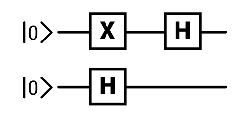

Try placing wires and gates before moving onto the advanced instructions and puzzle...
Place some wires to connect the source ( ) to the goal ( )!
Try to solve the puzzle using less than 6 gates! Leave a comment with your solution!
This playground gives you an visual way to understand and interact with quantum computing. You can get a sense for how a qubit can look and how it can change. It also allows you to create some simple "quantum algorithms" to solve a puzzle. My goal with this project is to create the foundation for a visual and interactive way of trying out quantum computer simulations.
This playground uses a mix between conventional "quantum circuit" symbols, and custom symbols.

Also note that in real quantum computers, measurements are the only way to get information out of a quantum computer! Notice how measurements change the qubit (by aligning it) and give a random (yet controllable) result.
I hope that this interactive and visual way of experiencing quantum computing can both make quantum computing more accessible, and set a foundation for a visual understanding of quantum computing.
I plan on making an article explaining the basics of quantum computing, with puzzles interspersed to challenge your understanding. Please follow me here on Observable or on twitter @elliotokay if you want to see more interactive visual quantum computing!
I would greatly appreciate any feedback on this playground and article! Please feel free to leave a comment or reach out, it would help me a lot!
Thanks for taking a look! I like Θbservable!
Special thanks to S.W. and D.B. for giving feedback while I built this.
version 0.2 beta